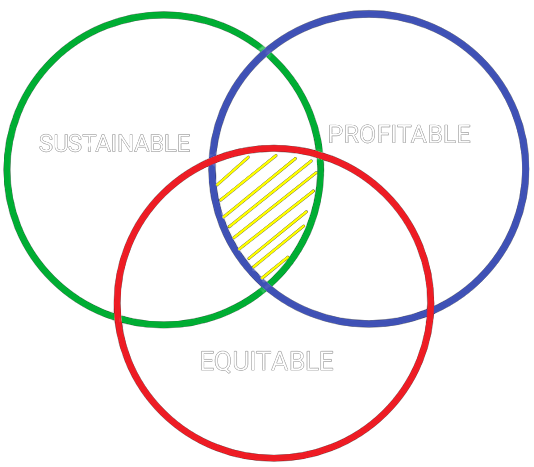

Mechanical Engineering entails the application of the principles of Mechanics and Material Science for design, analysis, manufacturing, and maintenance of mechanical systems.The Clean Energy Lab utilizes Machine Learning models and nano-scale analysis tools to develop and test materials. While the second year of Mechanical Engineering at university helped gain knowledge about designing, prototyping, and analysing on a macro-scale, through this research, I got the opportunity to explore the dynamics/properties of structures on a(n) nano/atomic scale. The gif is a molecular dynamic simulation of the crack proogation on a 2D tensile pulled solid.
I was honored to work for the Outreach Office of the Faculty of Applied Science & Engineering at the University of Toronto. As a Coding Instructor, I worked to teach and facilitate various online innovative STEM workshops and activities with a focus on coding, digital literacy, and creative design. To be more specific, I had the opportunity to conduct workshops on Python programming, Circuits with code, Website Development (HTML, CSS, JS), and Minecraft Block Coding.
Starting May 2022, I will be working as a Mechanical Engineering Intern at TC Energy located in Calgary, Alberta for a duration of 16 months. My role in this position entails the Mechanical analysis of the network of natural gas and crude oil pipelines traversing Canada, the US, and Mexico.
Until now, as a Mechanical engineering student, I have been learning and polishing my technical and analytical abilities as an engineer by partaking in several design projects. However, now, as I take my first step in the work Industry, leveraging my acquired abilities will not only contribute to the development of my designing abilities but also help me understand-
TC Energy is an energy infrastructure company. While energy is a basic human necessity, its management is crucial to negating its impacts on our surroundings. It can be stated that the rudimentary work in this industry directly relates to environmental problems such as air pollution, climate change, water pollution, thermal pollution, and solid waste disposal. It would be a great opportunity for me to understand the measures of sustainability that the organization takes to safeguard and manage the natural resources they work with. Furthermore, it would be an honor for me to get insights from experienced industry workers/engineers who have been implementing their skills and knowledge on finding the optimal balance between fulfilling the organization's economic goals and their environmental and social responsibilities.
I firmly believe that, currently, the concepts of Machine (or Deep) Learning (ML) have practical implications in almost all major industries. Through my experience of being an Undergraduate Research Student for the Clean Energy Lab, I was fortunate to get exposed to concepts of ML being used to optimize and design cleaner Li ion batteries. Lithium ion batteries have avast array of practical applications. However, its production and use also have significant environmental impacts. Working at the Clean Energy Lab helped me understand the effective use of current technlogical tools and concepts for solving a vital real life problem. My experience working in the lab drives me forward to acquire knowledge about these powerful tools to optimize my solutions. As I am currently undertaking courses learn the fundamentals of ML, I aspire to gain more proficiency and knowledge post-graduation. With having a primary goal of using my Mechanical Engineering knowledge to solve real-life problems, I believe that ML will not only help me analyze and optimize solutions, but also encorporate and analyze social, environmental, and economic data felicitously
In conclusion, the following image summarizes my designing objective as an industry working Mechanical Engineer.
